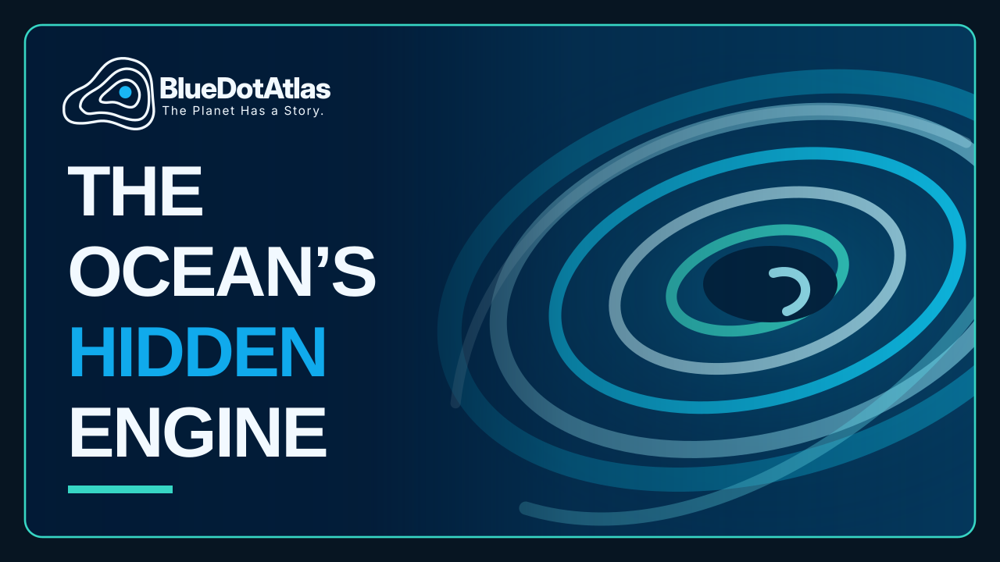

BlueDotAtlas / Earth & climate
The Planet
Has a Story.
Exploring the forces that shape our world through cinematic science documentaries.
The library
Stories worth exploring

The Ice Is Changing

Storms From Space
Visual layout examples only. No documentaries have been published; thumbnail art is illustrative and does not represent observed measurements.
Production workspace · Design preview
Studio overview
One visual system. From documentary research to final editorial review.
New documentary
Seven-stage guided production · Proposed UI pattern
- 01New video
- 02Sources
- 03Discover
- 04Media
- 05Script
- 06Voice
- 07Production
Project details
Example only. A title is not an evidence-backed claim.
Prototype only; nothing is stored on a server.
Status patterns
Ocean concept
DraftResearch placeholder
Glacier concept
In reviewEditorial placeholder
Storm concept
ReadyWorkflow example
Published state
PublishedLabel demonstration only
Illustrative statuses — no real content, accounts, research or server actions.
Component library / V0.1
One system. Two experiences.
Buttons, inputs, cards, status badges, workflow stepper and 16:9 gallery tiles share the approved BlueDotAtlas design language.
01 / Buttons
44px minimum height · visible keyboard focus · primary uses accessible theme token02 / Inputs
Clear label, hint and error state.This field is required.
03 / Status badges
Status text always visible. Color is supporting detail, never the sole signal.04 / Cards
Editorial workflow
Project workspace
A shared container for both library metadata and admin content.
Draft05 / Stepper
- 01Define
- 02Review
- 03Produce
06 / Brand colors
Deep Ocean / Glacial Light from the existing approved palette. Exact UI colors use existing semantic tokens.